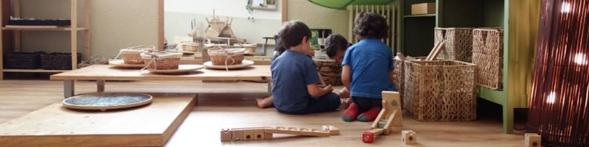

Asesoramiento a comedores respetuosos
Adapando Proyectos de Comedor a las Necesidades Infantiles

Equipo del Proyecto


Introducción
Ofrecemos asesoramiento orientado a equipos de comedor de escuelas públicas o privadas y proyectos de tiempo libre que quieran acercarse o profundizar en un acompañamiento respetuoso hacia las criaturas, las familias y el propio equipo.
Con más de 10 años de experiencia en la franja de mediodía de la escuela pública viva y activa Congrés-Indians. Cuando la escuela abrió sus puertas, ofreciendo un acompañamiento amoroso y respetuoso hacia las necesidades de las criaturas en un entorno escolar público, se puso de manifiesto también la necesidad de cuidar las franjas no lectivas, como el mediodía. Esto significó reflexionar sobre algunas situaciones normalizadas en la mayoría de comedores escolares como obligar a comer ciertas cantidades o alimentos, tener que hacer la siesta, premiar o castigar ciertos comportamientos, comer todos juntos en un gran comedor, etc.
Poco a poco fuimos forjando un proyecto de mediodía más respetuoso con las necesidades y ritmos de las criaturas, que está en constante evolución. Nuestra experiencia y aprendizaje nos ha permitido desarrollar una capacidad de observación y una metodología que pensamos puede ser de interés para otros proyectos que se planteen un acompañamiento más respetuoso.
Alrededor del 2015 nos empezaron a surgir las ganas de compartir la experiencia que suponía acompañar el mediodía de la escuela y empezamos a valorar, junto a compañeras del mediodía de la escuela Congrés-Indians, la posibilidad de aportar lo aprendido a otros proyectos que buscasen un acompañamiento específico para la franja de mediodía. Así, en 2018, Elina y Noel nos animamos a empezar y Kun Koro tomó su primera forma.

Trabajamos conjuntamente con:
· Senda. Centro de Acompañamiento a la Infancia y la Familia.
· Del Campo al Cole. Entidad líder en España en la promoción de la alimentación escolar sostenible y saludable.
Proyectos a los que hemos asesorado:
· Escola 30 Passos · Escuela pública de Infantil y Primaria.
· Escola Tanit · Escuela pública de Infantil y Primaria.
· Ca La Rosa · Comedor de Infantil, Primaria y Secundaria.
Hemos trabajado para:
· CAIEV · Centro de Asesoramiento e Investigación de Educación Viva.
· Ayuntamiento de Santa Coloma de Gramanet · Servicio de Salud Pública.
· L'Escoleta dels Indians · Proyecto preescolar.
Asesoramiento
Ofrecemos asesoramiento orientado a proyectos de comedor de escuelas públicas o privadas y proyectos de tiempo libre que quieren acercarse o profundizar en un acompañamiento respetuoso hacia las criaturas, las familias y el propio equipo.
Trabajamos sobre las necesidades de cada proyecto y sus intereses, ofreciendo observación, reflexiones, experiencias y propuestas acordes a cada proyecto educativo y de comedor. Acompañamos a los proyectos para que traten de cubrir más las necesidades de las criaturas.
Dividimos el contenido en tres apartados básicos:

· Acompañamiento emocional y actitudes del adulto acompañante
Observamos posibles mejoras y carencias en cómo nos relacionamos con el entorno y las criaturas como adultos acompañantes durante las comidas y a lo largo de la franja de mediodía. Ofrecemos formación, reflexiones y experiencias para trabajar en este sentido.

· Logística al servicio de las necesidades de las criaturas
Estudiamos la logística del proyecto interesado y detectamos posibles cambios logísticos que repercutan positivamente en las criaturas. Espacios, materiales o propuestas disponibles, tiempos de espera cortos, cuantos adultos hay en el espacio y como se sitúan, son algunas de las cuestiones más evidentes. Sin embargo, también indirectamente se puede beneficiar a las criaturas desde la logística, a través de lograr más bienestar en los acompañantes, familias, maestras y criaturas compañeras. En relación a estas cuestiones, aportamos nuestra experiencia y elaboramos propuestas de mejora a nivel logístico en función de lo observado y las necesidades y demandas del proyecto interesado.
· Espacios y materiales. Medios para la relación
Aportamos nuestra experiencia en cuanto a la disposición de los espacios, su uso y sus materiales para que, en conjunto con la logística y el acompañamiento, creen una franja de mediodía lo más agradable, respetuosa y rica posible para las criaturas y también los adultos.